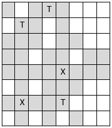

Cho một bàn cờ vua có kích thước 8 hàng 8 cột. Trên bàn cờ có một số quân tượng và quân xe. Một quân tượng có thể kiểm soát được hai đường chéo mà nó đang đứng, kể cả ô vị trí của quân tượng. Một quân xe có thể kiểm soát được đường dọc và đường ngang mà nó đang đứng, kể cả ô vị trí của quân xe. Dĩ nhiên là quân xe hay quân tượng chỉ kiểm soát được ô mà nó không bị cản. Bên dưới là ví dụ với 3 quân tượng và 2 quân xe, ô xám là các ô bị kiểm soát.

Cho kích thước bàn cờ và vị trí ô của các quân tượng và quân xe, bạn hãy xác định tổng số ô mà các quân tượng và quân xe này kiểm soát.
Dữ liệu vào:
- Dòng thứ nhất ghi số hai nguyên dương t và x (0 ≤ t, x ≤ 8), trong đó t là số quân tượng và x là số quân xe có trên bàn cờ. Hai số được ghi cách nhau một dấu cách.
- Trong t dòng tiếp theo mỗi dòng gồm hai số tx, ty (1 ≤ tx ≤ 8, 1≤ ty ≤ 8) là vị trí của các quân tượng. Hai số được ghi cách nhau một dấu cách. (tx là vị trí cột, ty là vị trí dòng)
- Trong x dòng tiếp theo mỗi dòng gồm hai số xx, xy (1 ≤ xx ≤ 8, 1≤ xy ≤ 8) là vị trí của các quân xe. Hai số được ghi cách nhau một dấu cách. (xx là vị trí cột, xy là vị trí dòng)
(Dữ liệu vào được đảm bảo là không có 2 quân cờ nào nằm cùng ô).
Dữ liệu ra:
Là một số nguyên duy nhất là tổng số các ô mà các quân tượng và quân xe kiểm soát.